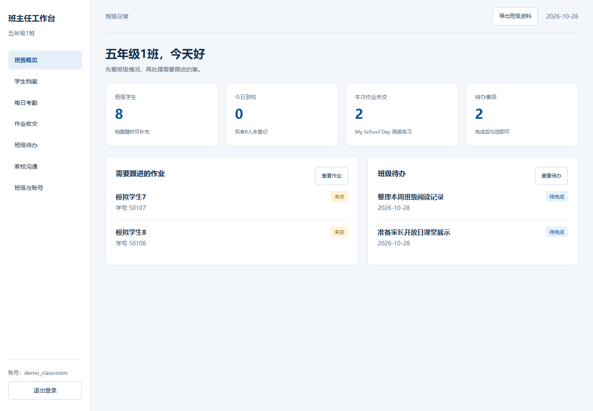

班主任工作台
制作带注册登录的班主任工作台，管理学生、考勤、作业和班级事务。


复制到WorkBuddy
请根据附件制作一个班主任工作台，支持注册、登录、退出和修改密码，不同账号分别保存自己的班级数据。包含学生档案、每日考勤、作业收交与订正、班级待办、家校沟通记录和资料导出。请用后端与数据库实现登录和保存，先给出功能安排，再生成可运行版本，附启动说明和模拟数据。
复现方法
- 查看功能需求与示例，上传需求清单，复制提示词；也可先下载运行包启动体验。
- 注册账号并带入模拟数据，添加学生、登记考勤，记录一次作业和沟通。
- 刷新或重新登录检查保存，再用第二个账号检查数据隔离。
使用要点
注册、登录、退出和密码修改正常；刷新及重新登录后记录仍在；不同账号分别管理自己的班级；考勤、作业状态与概览统计对应。
扩展提示词
请增加一张本周班级汇总表，按学生汇总迟到、请假、缺勤和作业未交次数，并支持导出CSV。
适用与扩展
可扩展为初中班级、年级组或备课组工作台；进一步增加家长端、通知、周报和多班管理。